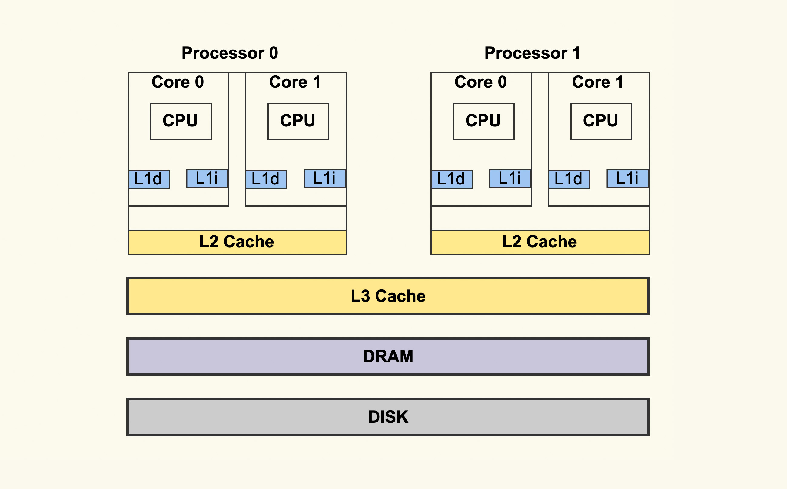
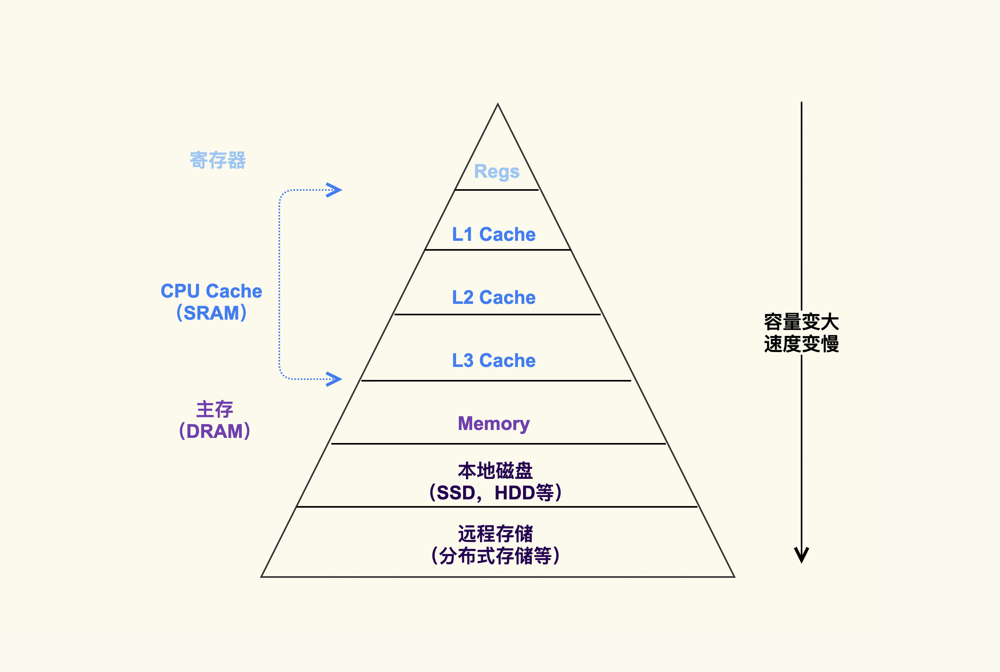
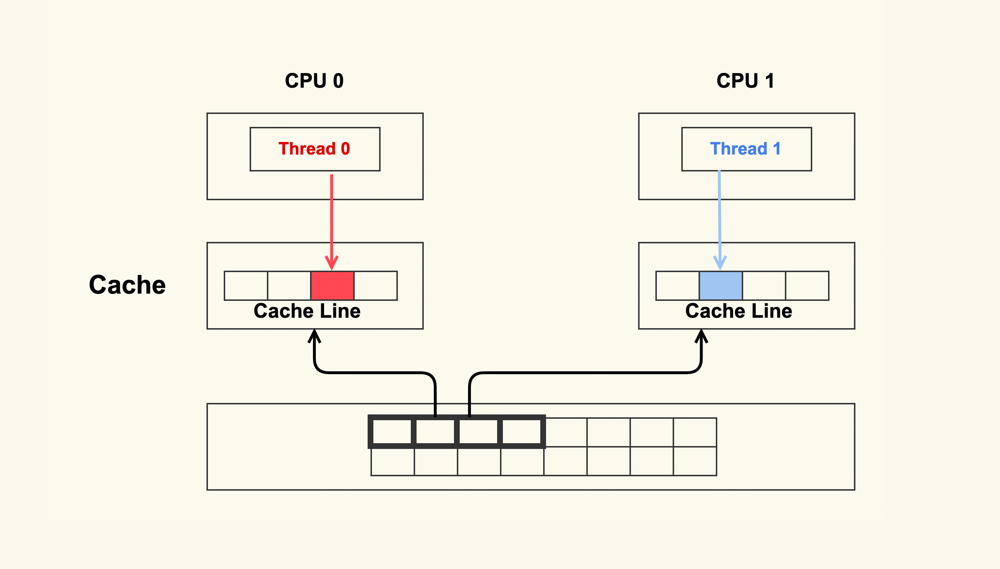
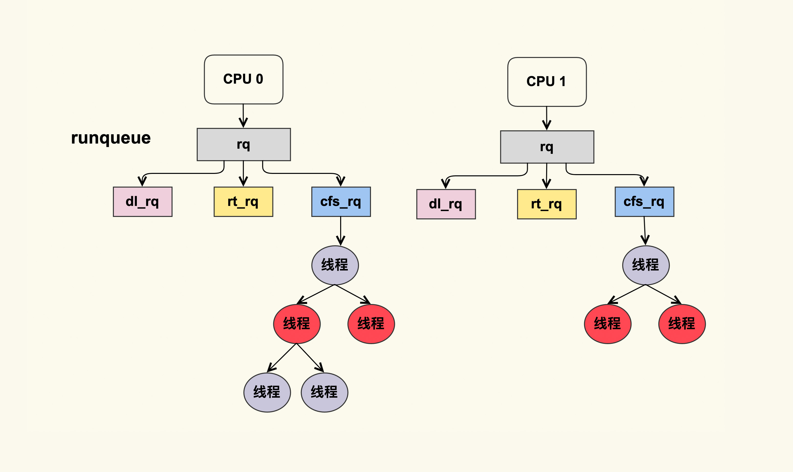
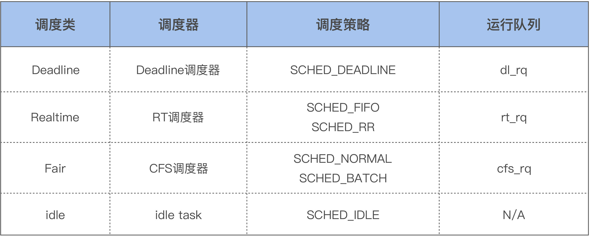

- 00 开篇词 如何让Linux内核更好地服务应用程序？.md.html
- 01 基础篇 如何用数据观测Page Cache？.md.html
- 02 基础篇 Page Cache是怎样产生和释放的？.md.html
- 03 案例篇 如何处理Page Cache难以回收产生的load飙高问题？.md.html
- 04 案例篇 如何处理Page Cache容易回收引起的业务性能问题？.md.html
- 05 分析篇 如何判断问题是否由Page Cache产生的？.md.html
- 06 基础篇 进程的哪些内存类型容易引起内存泄漏？.md.html
- 07 案例篇 如何预防内存泄漏导致的系统假死？.md.html
- 08 案例篇 Shmem：进程没有消耗内存，内存哪去了？.md.html
- 09 分析篇 如何对内核内存泄漏做些基础的分析？.md.html
- 10 分析篇 内存泄漏时，我们该如何一步步找到根因？.md.html
- 11 基础篇 TCP连接的建立和断开受哪些系统配置影响？.md.html
- 12 基础篇 TCP收发包过程会受哪些配置项影响？.md.html
- 13 案例篇 TCP拥塞控制是如何导致业务性能抖动的？.md.html
- 14 案例篇 TCP端到端时延变大，怎样判断是哪里出现了问题？.md.html
- 15 分析篇 如何高效地分析TCP重传问题？.md.html
- 16 套路篇 如何分析常见的TCP问题？.md.html
- 17 基础篇 CPU是如何执行任务的？.md.html
- 18 案例篇 业务是否需要使用透明大页：水可载舟，亦可覆舟？.md.html
- 19 案例篇 网络吞吐高的业务是否需要开启网卡特性呢？.md.html
- 20 分析篇 如何分析CPU利用率飙高问题 ？.md.html
- 加餐 我是如何使用tracepoint来分析内核Bug的？.md.html
- 结束语 第一次看内核代码，我也很懵逼.md.html
- 捐赠
17 基础篇 CPU是如何执行任务的？
你好，我是邵亚方。
如果你做过性能优化的话，你应该有过这些思考，比如说：
- 如何让CPU读取数据更快一些？
- 同样的任务，为什么有时候执行得快，有时候执行得慢？
- 我的任务有些比较重要，CPU如果有争抢时，我希望可以先执行这些任务，这该怎么办呢？
- 多线程并行读写数据是如何保障同步的？
- …
要想明白这些问题，你就需要去了解CPU是如何执行任务的，只有明白了CPU的执行逻辑，你才能更好地控制你的任务执行，从而获得更好的性能。
CPU是如何读写数据的 ？
我先带你来看下CPU的架构，因为你只有理解了CPU的架构，你才能更好地理解CPU是如何执行指令的。CPU的架构图如下所示：

你可以直观地看到，对于现代处理器而言，一个实体CPU通常会有两个逻辑线程，也就是上图中的Core 0和Core 1。每个Core都有自己的L1 Cache，L1 Cache又分为dCache和iCache，对应到上图就是L1d和L1i。L1 Cache只有Core本身可以看到，其他的Core是看不到的。同一个实体CPU中的这两个Core会共享L2 Cache，其他的实体CPU是看不到这个L2 Cache的。所有的实体CPU会共享L3 Cache。这就是典型的CPU架构。
相信你也看到，在CPU外还会有内存（DRAM）、磁盘等，这些存储介质共同构成了体系结构里的金字塔存储层次。如下所示：

在这个“金字塔”中，越往下，存储容量就越大，它的速度也会变得越慢。Jeff Dean曾经研究过CPU对各个存储介质的访问延迟，具体你可以看下latency里的数据，里面详细记录了每个存储层次的访问延迟，这也是我们在性能优化时必须要知道的一些延迟数据。你可不要小瞧它，在某些场景下，这些不同存储层次的访问延迟差异可能会导致非常大的性能差异。
我们就以Cache访问延迟（L1 0.5ns，L2 10ns）和内存访问延迟（100ns）为例，我给你举一个实际的案例来说明访问延迟的差异对性能的影响。
之前我在做网络追踪系统时，为了更方便地追踪TCP连接，我给Linux Kernel提交了一个PATCH来记录每个连接的编号，具体你可以参考这个commit：net: init sk_cookie for inet socket。该PATCH的大致作用是，在每次创建一个新的TCP连接时（关于TCP这部分知识，你可以去温习上一个模块的内容），它都会使用net namespace（网络命名空间）中的cookie_gen生成一个cookie给这个新建的连接赋值。
可是呢，在这个PATCH被合入后，Google工程师Eric Dumazet发现在他的SYN Flood测试中网络吞吐量会下降约24%。后来经过分析发现，这是因为net namespace中所有TCP连接都在共享cookie_gen。在高并发情况下，瞬间会有非常多的新建TCP连接，这时候cookie_gen就成了一个非常热的数据，从而被缓存在Cache中。如果cookie_gen的内容被修改的话，Cache里的数据就会失效，那么当有其他新建连接需要读取这个数据时，就不得不再次从内存中去读取。而你知道，内存的延迟相比Cache的延迟是大很多的，这就导致了严重的性能下降。这个问题就是典型的False Sharing，也就是Cache伪共享问题。
正因为这个PATCH给高并发建连这种场景带来了如此严重的性能损耗，所以它就被我们给回退（Revert）了，你具体可以看Revert “net: init sk_cookie for inet socket”这个commit。不过，cookie_gen对于网络追踪还是很有用的，比如说在使用ebpf来追踪cgroup的TCP连接时，所以后来Facebook的一个工程师把它从net namespace这个结构体里移了出来，改为了一个全局变量。
由于net namespace被很多TCP连接共享，因此这个结构体非常容易产生这类Cache伪共享问题，Eric Dumazet也在这里引入过一个Cache伪共享问题：net: reorder ‘struct net’ fields to avoid false sharing。
接下来，我们就来看一下Cache伪共享问题究竟是怎么回事。

如上图所示，两个CPU上并行运行着两个不同线程，它们同时从内存中读取两个不同的数据，这两个数据的地址在物理内存上是连续的，它们位于同一个Cache Line中。CPU从内存中读数据到Cache是以Cache Line为单位的，所以该Cache Line里的数据被同时读入到了这两个CPU的各自Cache中。紧接着这两个线程分别改写不同的数据，每次改写Cache中的数据都会将整个Cache Line置为无效。因此，虽然这两个线程改写的数据不同，但是由于它们位于同一个Cache Line中，所以一个CPU中的线程在写数据时会导致另外一个CPU中的Cache Line失效，而另外一个CPU中的线程在读写数据时就会发生cache miss，然后去内存读数据，这就大大降低了性能。
Cache伪共享问题可以说是性能杀手，我们在写代码时一定要留意那些频繁改写的共享数据，必要的时候可以将它跟其他的热数据放在不同的Cache Line中避免伪共享问题，就像我们在内核代码里经常看到的____cacheline_aligned所做的那样。
那怎么来观测Cache伪共享问题呢？你可以使用perf c2c这个命令，但是这需要较新版本内核支持才可以。不过，perf同样可以观察cache miss的现象，它对很多性能问题的分析还是很有帮助的。
CPU在写完Cache后将Cache置为无效（invalidate）, 这本质上是为了保障多核并行计算时的数据一致性，一致性问题是Cache这个存储层次很典型的问题。
我们再来看内存这个存储层次中的典型问题：并行计算时的竞争，即两个CPU同时去操作同一个物理内存地址时的竞争。关于这类问题，我举一些简单的例子给你说明一下。
以C语言为例：
struct foo {
int a;
int b;
};
在这段示例代码里，我们定义了一个结构体，该结构体里的两个成员a和b在地址上是连续的。如果CPU 0去写a，同时CPU 1去读b的话，此时不会有竞争，因为a和b是不同的地址。不过，a和b由于在地址上是连续的，它们可能会位于同一个Cache Line中，所以为了防止前面提到的Cache伪共享问题，我们可以强制将b的地址设置为Cache Line对齐地址，如下:
struct foo {
int a;
int b ____cacheline_aligned;
};
接下来，我们看下另外一种情况：
struct foo {
int a:1;
int b:1;
};
这个示例程序定义了两个位域（bit field），a和b的地址是一样的，只是属于该地址的不同bit。在这种情况下，CPU 0去写a （a = 1），同时CPU 1去写b （b = 1），就会产生竞争。在总线仲裁后，先写的数据就会被后写的数据给覆盖掉。这就是执行RMW操作时典型的竞争问题。在这种场景下，就需要同步原语了，比如使用atomic操作。
关于位操作，我们来看一个实际的案例。这是我前段时间贡献给Linux内核的一个PATCH：psi: Move PF_MEMSTALL out of task->flags，它在struct task_struct这个结构体里增加了一个in_memstall的位域，在该PATCH里无需考虑多线程并行操作该位域时的竞争问题，你知道这是为什么吗？我将它作为一个课后思考题留给你，欢迎你在留言区与我讨论交流。为了让这个问题简单些，我给你一个提示：如果你留意过taskstruct这个结构体里的位域被改写的情况，你会发现只有current（当前在运行的线程）可以写，而其他线程只能去读。但是PF*这些全局flag可以被其他线程写，而不仅仅是current来写。
Linux内核里的task_struct结构体就是用来表示一个线程的，每个线程都有唯一对应的task_struct结构体，它也是内核进行调度的基本单位。我们继续来看下CPU是如何选择线程来执行的。
CPU是如何选择线程执行的 ？
你知道，一个系统中可能会运行着非常多的线程，这些线程数可能远超系统中的CPU核数，这时候这些任务就需要排队，每个CPU都会维护着自己运行队列（runqueue）里的线程。这个运行队列的结构大致如下图所示：

每个CPU都有自己的运行队列（runqueue），需要运行的线程会被加入到这个队列中。因为有些线程的优先级高，Linux内核为了保障这些高优先级任务的执行，设置了不同的调度类（Scheduling Class），如下所示：

这几个调度类的优先级如下：Deadline > Realtime > Fair。Linux内核在选择下一个任务执行时，会按照该顺序来进行选择，也就是先从dl_rq里选择任务，然后从rt_rq里选择任务，最后从cfs_rq里选择任务。所以实时任务总是会比普通任务先得到执行。
如果你的某些任务对延迟容忍度很低，比如说在嵌入式系统中就有很多这类任务，那就可以考虑将你的任务设置为实时任务，比如将它设置为SCHED_FIFO的任务：
$ chrt -f -p 1 1327
如果你不做任何设置的话，用户线程在默认情况下都是普通线程，也就是属于Fair调度类，由CFS调度器来进行管理。CFS调度器的目的是为了实现线程运行的公平性，举个例子，假设一个CPU上有两个线程需要执行，那么每个线程都将分配50%的CPU时间，以保障公平性。其实，各个线程之间执行时间的比例，也是可以人为干预的，比如在Linux上可以调整进程的nice值来干预，从而让优先级高一些的线程执行更多时间。这就是CFS调度器的大致思想。
好了，我们这堂课就先讲到这里。
课堂总结
我来总结一下这节课的知识点：
- 要想明白CPU是如何执行任务的，你首先需要去了解CPU的架构；
- CPU的存储层次对大型软件系统的性能影响会很明显，也是你在性能调优时需要着重考虑的；
- 高并发场景下的Cache Line伪共享问题是一个普遍存在的问题，你需要留意一下它；
- 系统中需要运行的线程数可能大于CPU核数，这样就会导致线程排队等待CPU，这可能会导致一些延迟。如果你的任务对延迟容忍度低，你可以通过一些手段来人为干预Linux默认的调度策略。
课后作业
这节课的作业就是我们前面提到的思考题：在psi: Move PF_MEMSTALL out of task->flags这个PATCH中，为什么没有考虑多线程并行操作新增加的位域（in_memstall）时的竞争问题？欢迎你在留言区与我讨论。
感谢你的阅读，如果你认为这节课的内容有收获，也欢迎把它分享给你的朋友，我们下一讲见。
© 2019 - 2023 Liangliang Lee. Powered by gin and hexo-theme-book.